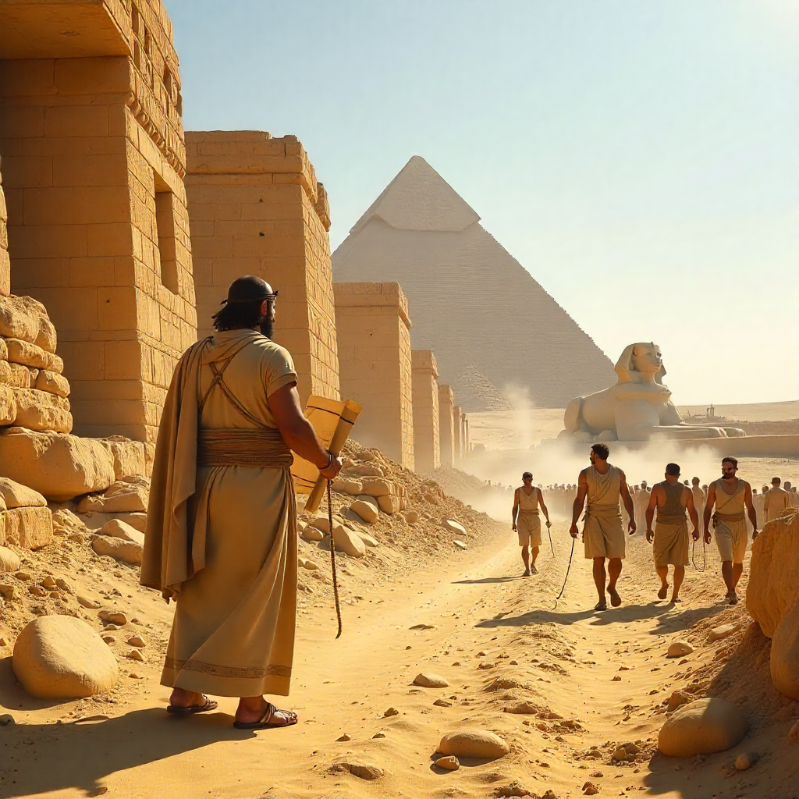

Contexto histórico
En el antiguo Egipto, las pirámides de Giza representaban no solo tumbas monumentales, sino también el poder absoluto de los faraones y la capacidad organizativa de su civilización. Bajo el reinado de Keops, Hemiunu, el arquitecto real, dirigió a miles de trabajadores, artesanos y esclavos en la construcción de la Gran Pirámide, una de las Siete Maravillas del Mundo Antiguo.
La magnitud del proyecto exigía un conocimiento avanzado de ingeniería, logística y astronomía, pues las pirámides estaban alineadas con precisión con las estrellas. El trabajo era arduo, acompañado por cantos, rituales religiosos y un profundo sentido de trascendencia espiritual.
¿Qué vivirás en VR?
- Observarás rampas, poleas y rodillos utilizados para mover gigantescos bloques de piedra caliza bajo el sol del desierto.
- Escucharás el canto de los obreros, el golpe de las herramientas y las órdenes de los capataces mientras la pirámide se eleva.
- Caminarás junto a Hemiunu, quien te mostrará planos y explicará el simbolismo de estas construcciones eternas.